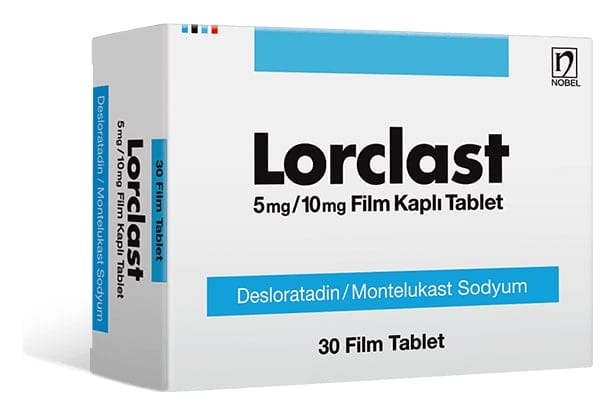

Lorclast 5 mg/10 mg Film Kaplı Tablet, Film Kaplı Tablet, 30 Adet

Ne için kullanılır
KT · Bölüm 1LORCLAST 5 mg desloratadin ve 10 mg montelukast olarak iki farklı etkin madde içeren pembe renkli, oval, bombeli, tek çentikli film kaplı tabletlerdir.
LORCLAST 30 tablet içeren PE’li alüminyum folyo-PE’li alüminyum formatura blister ambalajlarda piyasaya sunulmaktadır.
LORCLAST, alerjik rinit (nezle) ve alerjik rinitle birlikte olan astım tedavisinde ve semptomlarının giderilmesi ve uzun süren sebebi bilinmeyen ürtiker (kurdeşen) (kronik idiyopatik ürtiker) belirtilerinin giderilmesi için reçetelenir.